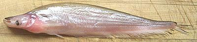

This fish can grow to nearly 24 inches, but the photo specimen would have been 16 inches (if the packing company hadn't broken off the tail fin) and weighed 14 ounces. Note: tail has been artificially restored in photo. They are caught wild and farmed, IUCN rated LC (Least Concern).
More on Catfish.
The flesh is tender and very mild without noticeable "catfishy" flavor, and tends to have a yellowish cast due to fat. That color isn't noticeable after cooking. Because the flesh is extremely tender this fish cannot be used in soups and stews as regular catfish can. It can be poached if cut into reasonable lengths.
This fish is flat and can easily be fried or steamed whole or pan dressed. Filleting is not difficult though, and yield is good with a 14 ounce fish yielding 7.5 ounces of fillet (54%) - that's skin-on because that's the way catfish is usually cooked. The skin is very thin and when fried shrinks a little and then relaxes. There are some very substantial centerline spines right at the front that should be pulled.
 Small specimens of this fish are also sold and are more practical than many other small fish you find in Asian markets. The photo specimen was 9 inches long and weighed 1.8 ounces. A 2.3 ounce fish yielded 1.2 ounces of fillet (52%).
Fried, the bottom fin becomes crisp and edible and the flesh is easy to eparate from the bones. Steamed the flesh also separates easily, but I recommend pulling the bottom fin before serving which makes eating much easier. I prefer them fried with a light dusting of rice flour.
sf_catsz* 061119 - www.clovegarden.com